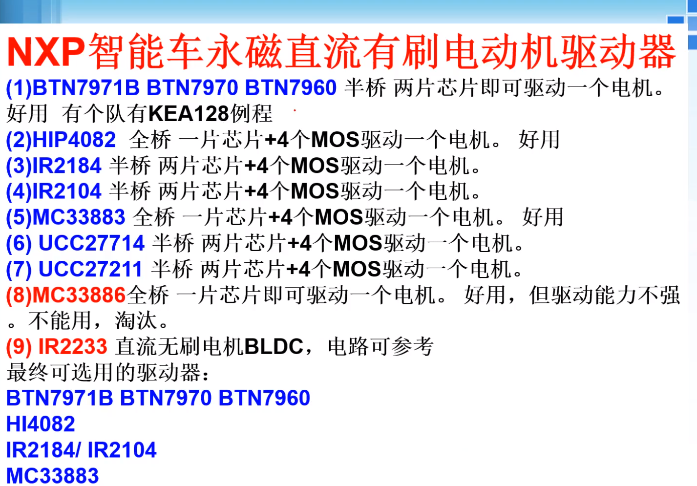
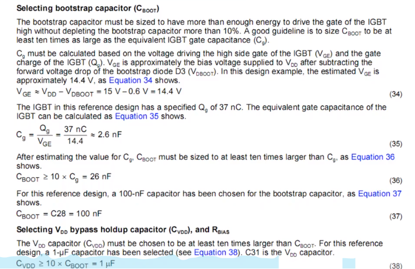

电机驱动
电机驱动
直流电机一般是通过H桥电路来驱动的，市面上的电机驱动模块可以分为2种:
基于集成电机驱动芯片(内部自带H桥电路)的电机驱动：TB6612、L298n
- 这种电机驱动的电路比较简单，但由于H桥集成在了芯片内部，所以支持的电机最大电流较小
栅极驱动IC + 自己用MOS管搭建H桥电路：得科电机驱动
这种电机驱动的最大电流由所选择的MOS管决定；自己搭建H桥电路时，对于高边MOS，需要自举电路，比较复杂。
栅极驱动IC：众所周知，NMOS的导通条件是Vgs>Vgsth，但是其最大漏极电流是随着Vgs的增大而增大的(电压控制电流)，当Vgs足够大时，才能通过更大的电流。由于单片机的IO输出的最大电压是仅有3.3V，因此就不能直接将单片机的IO与MOS的栅极相连，而是经过栅极驱动IC放大后再连接。
栅极驱动IC有一个吸收/输出电流的参数，这决定了它控制的MOS管的导通/关断时间。
直流电机驱动的原理图绘制
1.方案选择：
2.硬件选择注意事项
NMOS可以等效为一个开关和一个电阻Rds(on)，该电阻越小，MOS的功耗越低。所以应选择Rds(on)很小的NMOS。3.3mΩ左右
自举电路的二极管要用(超)快恢复二极管
自举电容Cboot的计算：

一般取
100nf就行了，且不能使用钽电容和电解电容，要用Np0或C0G或X7R电容(1206或0805封装)栅极驱动IC的VCC旁的滤波电容要大于10倍的自举电容
自举电路中二极管可以串联一个3.3欧姆的电阻，来减小电流的脉冲
PCB上电池与H桥要离得很近
电池的输入要用固态电容进行滤波
MOS管选型细节：①电机驱动瞬间电流比稳定运行时电流（额定电流）要大5~8倍左右，因此MOS管的最大漏极电流应选择电机额定电流10倍以上，比如额定功率为0.5A的电机，MOS管最大漏极电流应选择5A以上。②尽量选择内阻小的MOS管，其内阻越小越好。内阻小，压降小，管子功耗小，其发热量就小。③MOS管的最大工作电压是否满足要求？选取管子的最大工作电压应比电机工作电压大一倍，比如24V的电机，MOS管最大工作电压应选择48V以上。
MOS管实际通过的漏极电流(Id)由最终加在电机上电压以及电机本身的特性有关，与MOS管本身关系不是很大，只与MOS的Rds有关。因此，决定一个小车跑的多快的主要是电机本身，只要电机驱动上MOS管能通过的漏极电流大于电机运行是的电流，那么基本上驱动就不会拖电机的后腿了。
H桥运行时的情况
首先要记住，MOS管是电压控制(最大)电流的，即Vgs控制Id(这个要在MOS管处于饱和态才行即需要VD足够大)，MOS管可以看成一个电阻Rds，当Vgs增大时，这个电阻就很小，其分压也就变小了，加在电机上的电压就越接近接入电池的电压了。最终整个H桥的电流实际上是取决的电机的，而不是MOS管数据手册上那个最大的电流。
- MOS管在直流情况下的电压控制电流指的是控制能通过MOS的最大电流，并不是电压控制节流的放大倍数。。。。所以Id应该由MOS的打开程度与负载共同决定。当MOS打开比较少时，Id由MOS来限制；当MOS打开程度很大时，Id由负载限制。
电机的选择
电机最后跑的怎么样一般看他的额定电流、额定功率、额定转矩、额定转速等。对于小车来说，在额定转矩能满足其在地面受到的摩擦转矩时，电机的额定转速越大，跑的肯定也越快